朝
それぞれのペースで一日を始めます。
静かな時間帯にゆっくり準備をされる方もいれば、早めに支度をされる方もいます。慌ただしさを作りすぎず、落ち着いて一日を始められる空気を大切にしています。
Life
食事、共有スペース、ひとりの時間、スタッフとの距離感など、毎日の暮らしが少し想像できるようにまとめています。
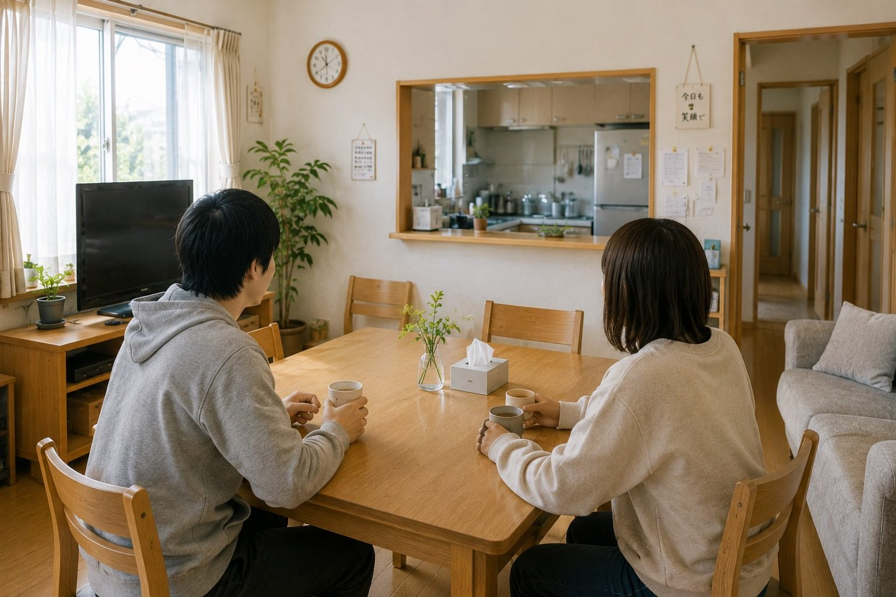
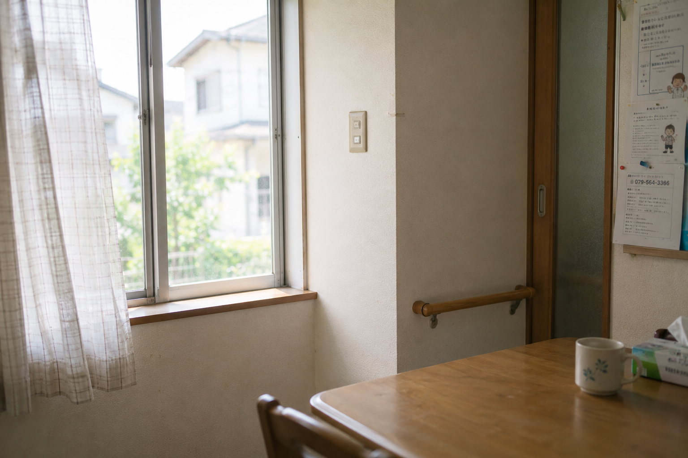
Daily rhythm
生活のリズムは人それぞれです。決められた形に無理に合わせるのではなく、安心して過ごせる流れを一緒に整えます。
食事、身支度、外出、通院、休息。毎日の小さな積み重ねが、落ち着いた暮らしにつながります。
「できること」は続けられるように、「難しいこと」は必要な支援を確認しながら、暮らしの中で無理なく整えていきます。
Scenes
一日を同じペースで過ごす必要はありません。静かな時間、誰かと話す時間、ひとりで休む時間を大切にしています。
静かな時間帯にゆっくり準備をされる方もいれば、早めに支度をされる方もいます。慌ただしさを作りすぎず、落ち着いて一日を始められる空気を大切にしています。
日中の過ごし方は人によって異なります。通所や仕事へ向かう方、予定に合わせて外出する方、体調を見ながらゆっくり過ごす方もいます。
通所やお仕事から戻られたあと、リビングでテレビを見たり、自室で静かに過ごしたりします。食事の時間も、生活のリズムを整える大切な時間です。
その日の疲れや気分に合わせて、ひとりの時間も大切にします。必要な見守りを行いながら、安心して休める環境を整えます。
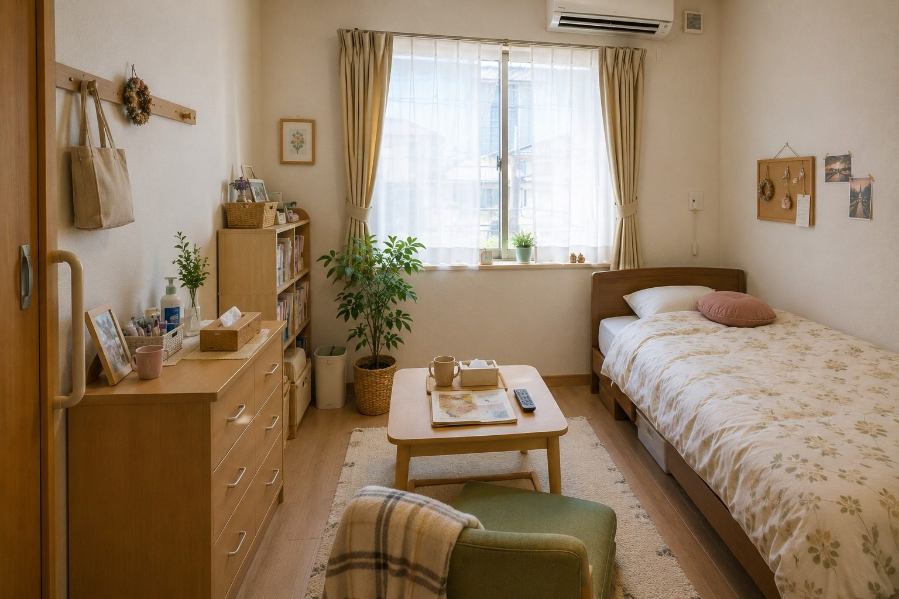
ひとりで落ち着ける時間を持てる場所です。持ち物や過ごし方は、ご本人の生活に合わせて整えていきます。
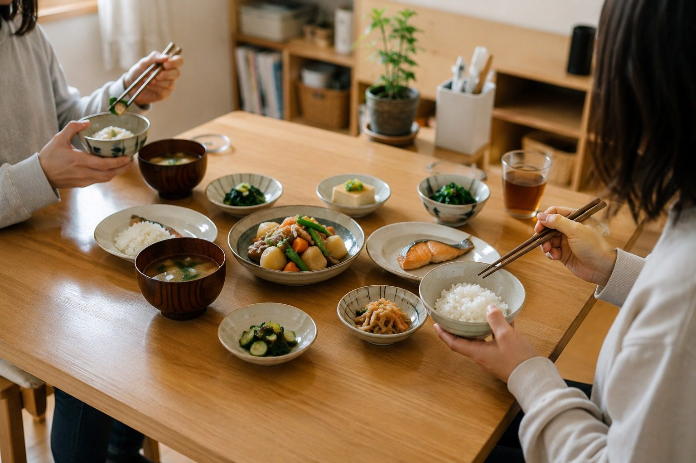
食事は毎日の安心につながる大切な時間です。体調や生活リズムを見ながら、無理なく食べられる環境を整えます。
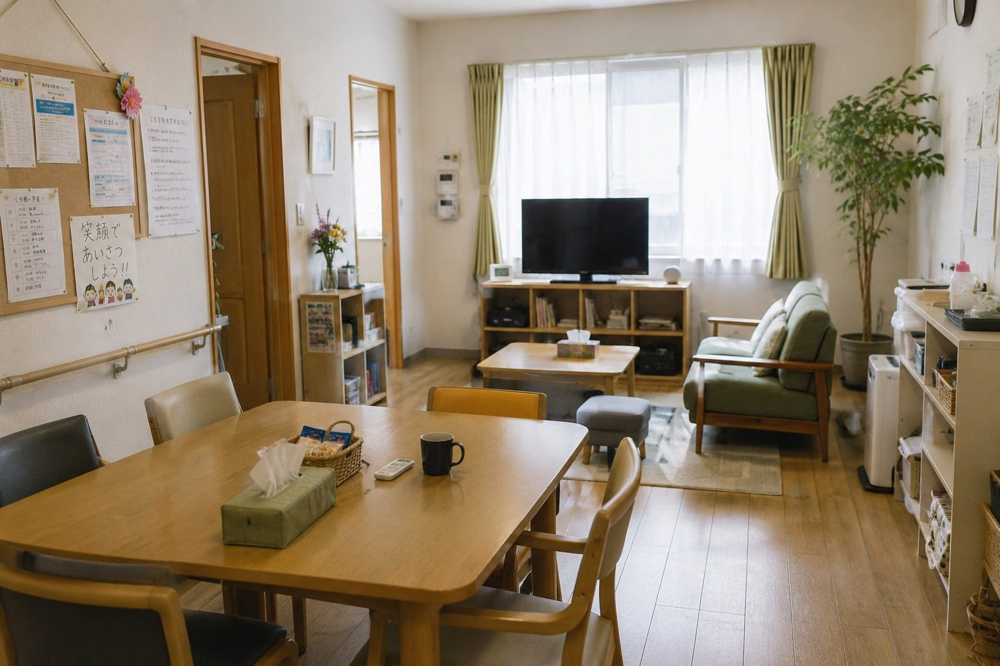
他の方と過ごす時間も、静かに過ごす時間もあります。人との距離感を大切にしながら使える場所です。
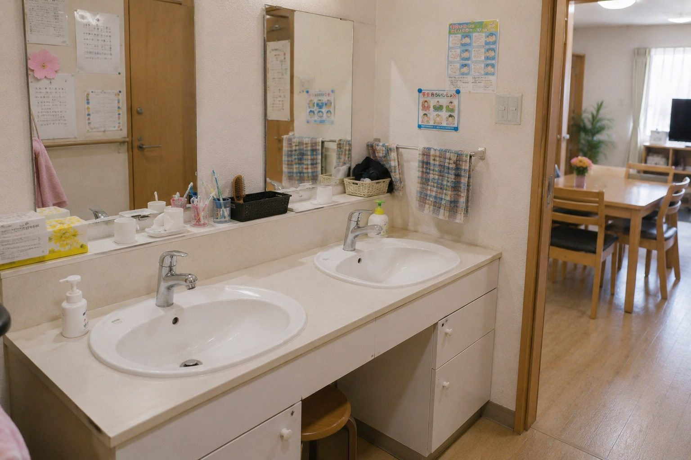
洗面、着替え、外出準備など、毎日の動作が落ち着いて行えるよう、声かけや見守りを行います。
Distance
同じ家で暮らしていても、いつも一緒に過ごす必要はありません。
話したい時、静かにしたい時、その日の気分や体調に合わせた距離感を大切にしています。暮らしの中で無理が続かないよう、必要な声かけや見守りを行います。
過ごし方に正解を押しつけるのではなく、その方にとって落ち着きやすい暮らし方を一緒に考えます。
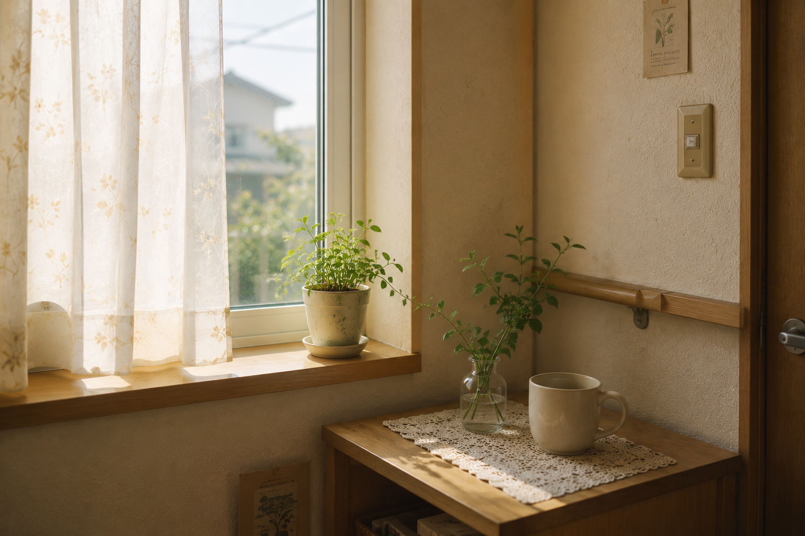
必要に応じて服薬や体調の確認を行い、変化がある時は関係機関と連携します。
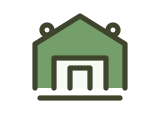
予定の確認や準備など、生活に必要な外出を無理なく進められるよう支えます。
必要な範囲で確認し、ご本人が安心して生活できるよう一緒に整理します。
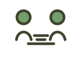
困った時に声をかけられる関係づくりを、日々の暮らしの中で大切にします。
Everyday photos
居室やリビングだけでなく、廊下、洗面スペース、食卓など、毎日使う場所の落ち着きも大切にしています。
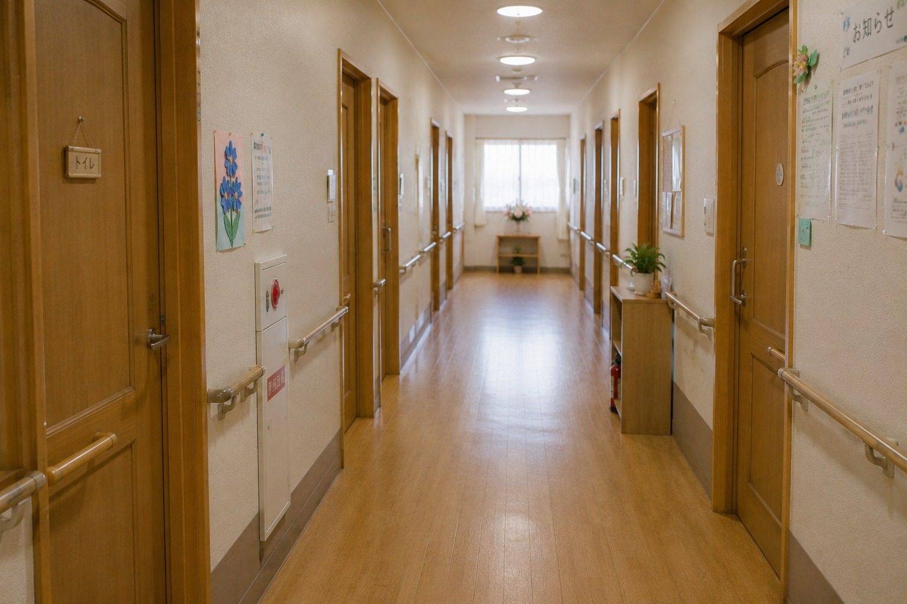
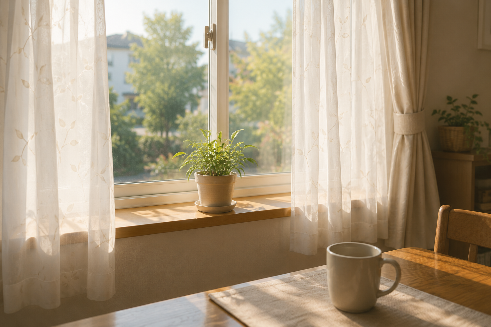
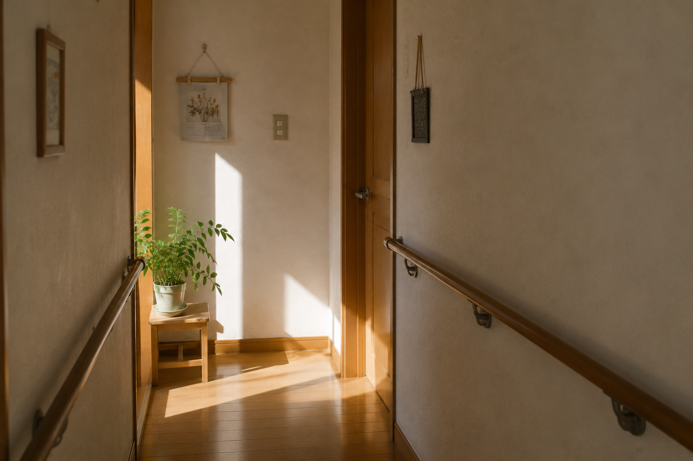